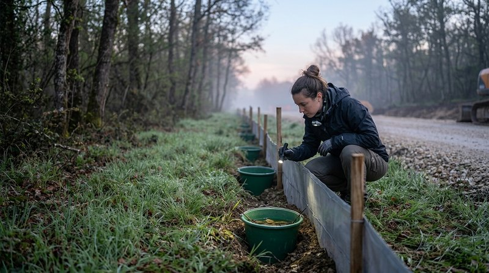

Conseils techniques
Solutions pour les chantiers de construction, comme les parcs éoliens et les centrales photovoltaïques.
ÉolienPhotovoltaïque
Technique
Missions de coordination, de suivi de chantier et d'accompagnement de projets pour les maîtres d'ouvrage et les responsables de travaux.

Il conseille et accompagne le projet pour adapter les choix techniques et veiller à leur bonne exécution, dans le respect de l'environnement.

Solutions pour les chantiers de construction, comme les parcs éoliens et les centrales photovoltaïques.
Ajustement des mesures de réduction ou de compensation issues des études d'impact.
Souvent mesure de réduction des impacts, il accompagne le projet depuis le chantier jusqu'aux suivis après implantation.